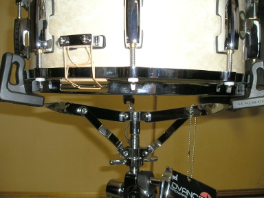
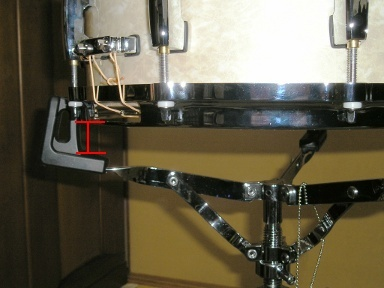
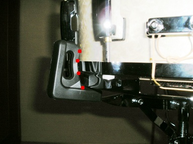
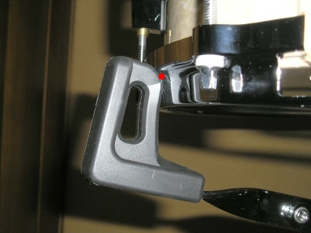
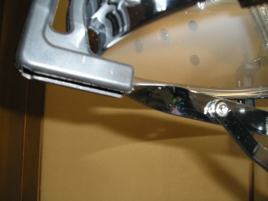
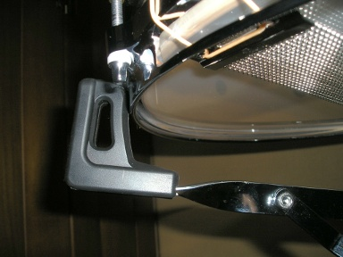

スタンドを入手したので写真を撮り放題！！ということで例のスネアのセッティングの再解説。
普通スネアドラムというのは次の写真のように、スネアスタンドのバスケットにスネアドラムを入れてアームでフープを締めるようにセッティングします。
わたしが某ドラム・テックさんの技をパクってポプラちゃんのセッティングに採用したのが下のセッティングになります。
違いがわかりますか？スネアドラムがバスケットから高く浮いていますね？
でも重要なのは高く浮いていることじゃないんです。
どのようにセッティングしているのかわかるように、スタンドのアームとスネアのフープが接するあたりをアップにしてみましょう。
普通のセッティングがこれです。
フープの 3 個所、角度によってはシェル 1 個所にもアームが接して、最大 4 個所でがっつりとスネアドラムを固定することになります。スネアスタンドのアームは 3 本ありますから、スネアドラム全体では最大 12 個所でがっつり固定することになります。
そしてこれが某ドラム・テックさんからパクった方です。
フープの段差 ( といいますかメイちゃんのフープは Master Cast なのでくっきりとした段差ではなくてニョロ〜ンとなだらかになっています。それでも段差は段差です ) を利用して、スタンドのアームの上にスネアドラムを乗せている雰囲気が伝わるかと思います。
これだとアームがフープに接する個所が 1 個所になります。スタンドのアームは 3 本ありますから合計 3 個所でスネアドラムを固定することになります。
12 個所で固定と 3 個所で固定のどちらが、スネアドラムがよく「鳴る」かはわかりますよね。
もちろん音自体が変るので、普通の方がいいのか、それともフローティング方式 ( 今思いつきで命名！！Pearl さんのフリー・フローティングとまぎらわしいけど、まぁいいや ) がいいのかはドラマーが求める音によって異なってきます。どちらがいいとは一概に言えないことは当然のことです。
さて、もう少しわかりやすいように、角度を変えて下から撮ってみました。
こちらが普通の方になります。ピントが合ってないのはご愛敬ということで。シェル内側のベント・ホールとラグを止めているネジにピントがあってしまいました ＞＜
そしてこちらがフローティング方式になります。
フローティング方式だと、スネアドラムがアームから外れてスネアサイドのヘッドやスナッピーがダメになるんじゃないかだとか、スネアドラムがスタンドから外れて最悪落下してしまうのでは、と思う人もいるかもしれません。
結論からいうと、その心配は無用です。
スネアスタンドを倒してしまうか、あるいはよほどスタンドを傾けでもしないかぎり、スネアドラムがスタンドから外れることはありません。
これは実際にセッティングするとわかるのですが、フローティング方式のように、アームがフープに接触するのが実質 3 点であっても、アームが 3 本あるからスネアドラムはズレもしないんです。
それはなぜかというと．．．．．
フローティング方式でなくていいので、普通のセッティングで 1 本のアームからスネアドラムを内側にずらそうとしてください。
動かないですよね？
他の 2 本のアームがずれるのを邪魔しますよね？
つまりそういうことなんです。スタンドのアームが 3 本以上あるかぎりフローティング方式であっても、スネアドラムはスタンドから外れません。
実際にこのセッティングを神保彰さんも使っていらっしゃって実績は折り紙付きです。
って、某ドラムテックさんがどなたか、チョンバレですねwww